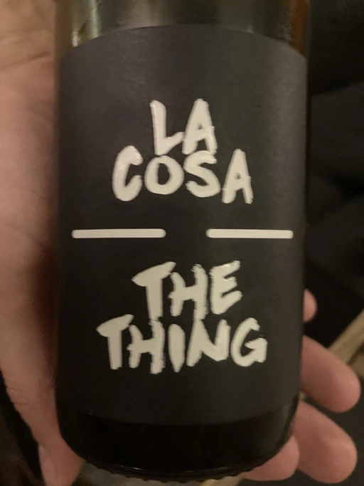

- Type
- White Still, Sweet
- Producer
- Alfredo Maestro
- Vintage
- 2018
- Location
- Spain, Castilla y León VT
- Grapes
- Zibibbo
- Alcohol
- 11
- Sugar
- 147
- Price
- 432 UAH
- Cellar
- N/A
Ratings
2021-08-27 - 7.75
Unexpectedly nice dessert wine to finish lunch. Expressive bouquet of raisins, tropical fruits, field flowers and buckwheat honey. Thanks to acidity, it feels fresh and is so quaffable. But my favourite part is acetonic finish. That case when VA are so well placed only to add complexity.